금속재료시험기능사 (2007-01-28 기출문제)
1과목: 금속재료일반
1. 다음 중 강자성체로만 되어 있는 것은?
- Ni, Hg, Au
- Fe, Sb, Mn
- Fe, Ni, Co
- Bi, Hg, Sb
(정답률: 73%)

2. 강에 황(S)이 많이 개제되었을 때 고온에서 어떠한 현상이 일어나는가?
- 저온메징
- 상온메징
- 청열메징
- 적열메징
(정답률: 62%)
3. 마우러 조직도는 탄소(C)와 어떤 원소와의 관계를 표시한 것 인가?
- Mn
- Si
- S
- P
(정답률: 66%)
4. 다음의 표면경화법 중 금속 시멘테이션(cementation)법이 아닌 것은?
- 크로마이징(chromzing)
- 질화법(nitriding)
- 칼로라이징(calorizing)
- 보로나이징(boronizing)
(정답률: 67%)
5. 강의 불충분한 탈산으로 인한 용강의 비등작용이 일어나서, 응고한 후에는 많은 기포가 발생되며, 주형의 외벽으로 림이 형성되는 강괴는?
- 림드강
- 캡드강
- 킬드강
- 세미킬드강
(정답률: 87%)
6. 다음 중 Sn을 함유하지 않은 청동은?
- 납 청동
- 인 청동
- 니켈 청동
- 알루미늄 청동
(정답률: 30%)
7. 모스경도가 3, 용융점이 1083℃, 비중이 8.9이며 전기에 양도체인 금속은?
- Pt
- Cu
- Sn
- Zn
(정답률: 60%)
8. 주조 상태 그대로 연삭하여 사용하며, 단조가 불가능한 주조 경질 합금 공구 재료는?
- 스텔라이트
- 고속도강
- 퍼멀로이
- 플래티나이트
(정답률: 71%)
9. 표점거리가 50mm인 강봉에 인장하중을 가하여 60mm로 되었다면 변형률은?
- 10%
- 20%
- 30%
- 40%
(정답률: 73%)
10. 다음 중 소성가공에 속하지 않는 것은?
- 압출
- 단조
- 정련
- 인발
(정답률: 59%)
11. 분말상 Cu에 약 10% Sn 분말과 2% 흑연 분말을 혼합하고, 윤활제 또는 휘발성 물질을 가한 후 가압 성형하여 소결한 베어링 합금은?
- 켈밋 메탈
- 배빗 메탈
- 앤티프릭션
- 오일리스 베어링
(정답률: 55%)
12. 융용 금속의 냉각곡선에서 응고가 시작되는 지점은?
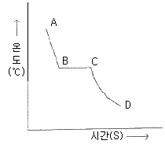
- A
- B
- C
- D
(정답률: 76%)
13. 다음 중 주철의 성장 원인이라 볼 수 없는 것은?
- Si의 산화에 의한 팽창
- 시멘타이트의 흑연화의 의한 팽창
- A4변태에서 무게 변화에 의한 팽창
- 불균일한 가열로 생기는 균열에 의한 팽창
(정답률: 53%)
14. 순철의 A3 변태점은 약 몇 ℃ 인가?
- 210℃
- 768℃
- 910℃
- 1400℃
(정답률: 83%)
15. 용융액에서 두 개의 고체가 동시에 나오는 반응은?
- 포석 반응
- 포정 반응
- 공석 반응
- 공정 반응
(정답률: 47%)
16. 축척 1:2 도면에서 실물의 치수가 30mm인 경우 치수선에 기입하는 치수는 몇 mm로 하는가?
- 15
- 30
- 45
- 60
(정답률: 29%)
17. 불규칙한 곡선을 그릴 때 사용하는 자는?
- 삼각자
- T자
- 눈금자
- 운형자
(정답률: 77%)
18. 다음 중 A3 도면 용지의 크기(mm)는?
- 594×841
- 420×594
- 297×420
- 210×297
(정답률: 77%)
19. 다음의 투상도에서 물체의 높이가 나타나지 않는 것은?
- 정면도
- 좌측면도
- 평면도
- 우측면도
(정답률: 78%)
20. 호화 현의 치수 표시에 대한 설명 중 틀린 것은?
- 현의 치수 숫자 위에 기호 ( ) 를 덧붙인다.
- 현의 길이를 표시하는 치수선은 현과 평행하게 긋는다.
- 호의 길이를 표시하는 치수선은 그 호와 동심인 원호로 표시한다.
- 현과 호의 치수 보조선은 현에 직각되게 긋는다.
(정답률: 52%)
2과목: 금속제도
21. 도면에 기입된 “43-ø20 드릴” 표시에서 43이 뜻하는 것은?
- 드릴 지름
- 드릴 구덩수
- 드릴 구멍간격
- 드릴 구멍깊이
(정답률: 56%)
22. 기준치수가 50, 최대허용치수가 50.007, 최소허용치수가 49.982일 때 위치허용차는?
- +0.025
- -0.018
- +0.007
- -0.025
(정답률: 36%)
23. 표면기호에 의한 가공방법의 약호로 틀린 것은?
- B:보링
- G:줄다듬질
- L:선반가공
- M:밀링가공
(정답률: 79%)
24. 호칭치수 1/2 인치, 산의 수가 15개, 나사의 종류는 유니파이 가는 나사일 때, 표시하는 방법으로 옳은 것은?
- 1/2-15 UNF
- M15×3 UNC
- P3×T 15
- TW 15-1/2
(정답률: 73%)
25. 다음 중 치수선의 기입이 가장 합리적인 것은?
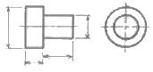
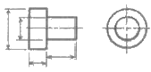
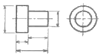
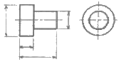
(정답률: 55%)
26. 나사의 유효지름을 구하는 식으로 옳은 것은?
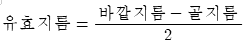
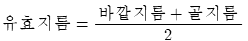
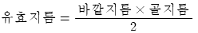
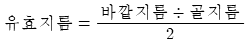
(정답률: 39%)
27. KS 분류기호 중에서 KS B는 어느 부문인가?
- 전기
- 기본
- 금속
- 기계
(정답률: 61%)
28. 다이아몬드 첨단으로 연마된 시료의 표면을 긁어서 그 흠의 모양에 의해 경도를 정량적으로 측정하는 시험법은?
- 비커스 경도 시험법
- 쇼어 경도 시험법
- 로크웰 경도 시험법
- 긁힘 경도 시험법
(정답률: 50%)
29. 강의 조미니 시험법에 대한 설명 중 틀린 것은?
- 강의 경화능 측정에 사용된다.
- 양쪽 끝을 분수로 서냉한다.
- 길이 방향을 따라 일정 간격으로 경도를 측정한다.
- 시험편 크기는 지름 25 mm, 길이 100mm인 표준시험편을 주로 사용한다.
(정답률: 37%)
30. 재료가 외부로부터 받는 충격에 얼마나 견딜 수 있는지를 시험하는 기기는?
- 샤르피(Charpy) 시험기
- 쇼어(Shore) 시험기
- 아이야(Meyer) 시험기
- 비커스(Vickers) 시험기
(정답률: 57%)
31. 다음 중 로크웰 경도값(HRC)을 구하는 식은? (단, h=압입자국의 깊이, ho=낙하의 높이, p=하중, t=홈의 깊이, D=압입자의 직경, d=압흔의 직경)
- 100-500h
- 130+600△t
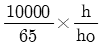
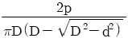
(정답률: 43%)
32. 강의 비금속 개재물 중 B형 개재물에 속하는 것은?
- 인 중성몰계
- 황화철 황화물계
- 알루미늄 산화물계
- 마그네슘 황화물계
(정답률: 40%)
33. 강에서 설퍼프린트 시험을 하는 가장 큰 목적은?
- 강재 중의 황화물의 분포상황을 조사하는 것이다.
- 강재 중의 환원물의 분포상황을 조사하는 것이다.
- 강재 중의 비금속 개재물을 조사하는 것이다.
- 강재 중의 표면 결함을 조사하는 것이다.
(정답률: 71%)
34. 다음은 연강의 응력-변형 곡선이다. 탄성한계점은?
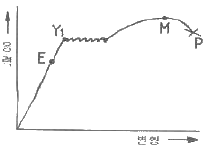
- P점
- E점
- Y점
- M점
(정답률: 40%)
35. 구리판, 알루미늄판 및 기타 연성의 판재를 가압 성형하여 변형능력을 시험하는 것은?
- 마모시험
- 크리프시험
- 압축시험
- 에릭션시험
(정답률: 52%)
36. 쇼어 경도계의 특징을 설명한 것 중 틀린 것은?
- 운반이 용이하고 시험을 간단히 할 수 있다.
- 재료나 제품에 직접 시험을 하기는 곤란하다.
- 시험편이 얇은 것 또는 작은 것도 측정이 가능하다.
- 일정한 높이에서 시험편에 낙하시킨 해머가 반발한 높이로 경도값을 측정한다.
(정답률: 62%)
37. 방사선투과검사에서 사용하는 증감지의 종류가 아닌 것은?
- 형광 증감지
- 반사 증감지
- 금속박 증감지
- 금속 형광 증감지
(정답률: 34%)
38. 탐촉자, 에코, 불감대, 반사파 등이 이용되는 비파괴 시험은?
- 누설검사
- 초음파탐상시험
- 와전류탐상시험
- 침투탐상시험
(정답률: 52%)
39. 현미경 조직검사를 할 때의 안전 및 유의사항으로 틀린 것은?
- 현미경은 정교하므로 렌즈는 데시케이터에 넣어 보관한다.
- 시험편 연마 작업시에는 시험편이 튀지 않도록 단단히 잡는다.
- 시편절단시 냉각수를 사용하지 않으며, 초고속으로 절단한다.
- 시험편 채취시에는 절단 작업에 사용되는 도구의 안전 사항을 점검한다.
(정답률: 75%)
40. 인장시험기에서 시험편 물림 장치의 물림부 구비조건이 아닌 것은?
- 시험편이 물림부에 비스듬히 물리어 편심 하중이 생기도록 한다.
- 시험편과 물림부와의 미끄럼이 없어야 한다.
- 시험편에 심한 변형을 주어서는 안된다.
- 취급이 편리해야 한다.
(정답률: 70%)
3과목: 금속재료조직 및 비파괴시험
41. 다음 비파괴검사방법 중 인체상 안전관리에 가장 유의해야할 사항은?
- 초음파탐상시험
- 침투탐상시험
- 자기탐상시험
- 방사선탐상시험
(정답률: 75%)
42. 그라인더에서 비산하는 연식분을 유리판상에 삽입해서 그 크기, 색, 형상 등을 현미경으로 관찰하여 강종을 판단하는 시험은?
- 펠릿 시험
- 분말 불꽃 시험
- 매립 시험
- 그라인더 불꽃 시험
(정답률: 26%)
43. 금(Au), 백금(Pt) 등 귀금속의 부식재로 이용되는 것은?
- 왕수
- 아세트산
- 피크린산
- 염화제이철
(정답률: 43%)
44. 형광침투탐상검사로 검사하기에 가장 용이한 결함은?
- 표면균열
- 편석
- 내부기공
- 내부결정
(정답률: 48%)
45. 연강의 결정립계를 관찰하기 위해서는 약하게 부식하여 관찰해야 하는 데, 이에 가장 적합한 부식제는?
- 피크랄 용액
- 염산 용액
- 염화제이철 용액
- 수산화나트륨 용액
(정답률: 28%)
46. 강의 매크로 조직 시험시, 강괴의 응고 과정에서 결정 상태의 변화 또는 성분의 편차에 따라 윤곽상으로 부식의 농도 차가 나타난 것은?
- 수지상 결정
- 잉곳 패턴
- 중심부 편석
- 피트
(정답률: 22%)
47. 다음 중 물질 내에서 초음파의 속도에 미치는 영향이 가장 큰 것은?
- 습도
- 밀도
- 형상
- 강도
(정답률: 51%)
48. 금속조직 내에서 상의 양을 측정하는 방법이 아닌 것은?
- 점의 측정법
- 면적의 측정법
- 직선의 측정법
- 부피의 측정법
(정답률: 45%)
49. 로크웰 경도계의 기준 하중은 10kgf이다. 로크웰 경도 시험을 할 때의 일반적인 시험하중이 아닌 것은?
- 60kgf
- 100kgf
- 150kgf
- 200kgf
(정답률: 31%)
50. 방사선 물질의 유무나 레벨 또는 조사선량율을 측정하는 방사선 측정기는?
- 계조계
- 투과도계
- 서베이미터
- 필름카세트
(정답률: 43%)
51. 다음 중 일반 금속 현미경을 이용하여 관찰할 수 없는 것은?
- 금속 성분
- 균열의 형상
- 조직의 변화
- 결정입도의 크기
(정답률: 41%)
52. 자분탐상검사에서 선형자계가 형성되는 자화방법은?
- 축통전법
- 코일법
- 프로드법
- 전류관통법
(정답률: 39%)
53. 누설검사에 있어서 기체 흐름의 형태가 아닌 것은?
- 층상(laminar) 흐름
- 교란(turbulent) 흐름
- 분자(molecular) 흐름
- 반사(reflection) 흐름
(정답률: 37%)
54. 재료의 강도보다 훨씬 적은 하중이 가해져도 여러 번 반복되면 점차 약화되어 파괴되는 현상은?
- 피로파괴
- 응력파괴
- 마멸파괴
- 크리프파괴
(정답률: 48%)
55. 인장시험과 반대 방향으로 하중이 작용하는 시험법은?
- 피로시험
- 마멸시험
- 압축시험
- 굽힘시험
(정답률: 39%)
56. 시험편의 평행부 지름이 20mm, 최대하중이 5000kgf일 때 인장강도는 약 몇 kgf/mm2인가?
- 4.0
- 15.9
- 43.7
- 79.6
(정답률: 32%)
57. 방사선투과시험에서의 안전 및 유의사항으로 틀린 것은?
- 촬영시에는 접지를 확실히 한다.
- 관접압 상승 속도에 유의하여 탐상기를 사용해야 한다.
- X-선 촬영구역에는 위험 표지판을 설치할 필요가 없다.
- X-선 검사시에는 안전과 관련하여 납(Pb)으로 밀폐된 공간에서 촬영한다.
(정답률: 69%)
58. 현미경 검사를 하려고 할 때 시험편의 크기가 작아 제작 및 취급이 곤란한 것을 적당한 크기로 성형하는 작업은?
- 연마
- 부식
- 마운팅
- 시료채취
(정답률: 53%)
59. 다음의 현미경 중 및 대신에 파장이 짧은 전자선을 시료에 투과시켜 전자 렌즈로 상을 형성시키며, 시료 내부에 생긴 전위와 같은 결정의 결함이나 원자 배열에 대한 정보를 얻을 수 있는 것은?
- 편광 현미경
- 광학 금속 현미경
- 투과 전자 현미경
- 주사 전자 현미경
(정답률: 62%)
60. 초음파탐상검사에 사용되는 초음파의 종류가 아닌 것은?
- 종파
- 판파
- 원형파
- 표면파
(정답률: 42%)